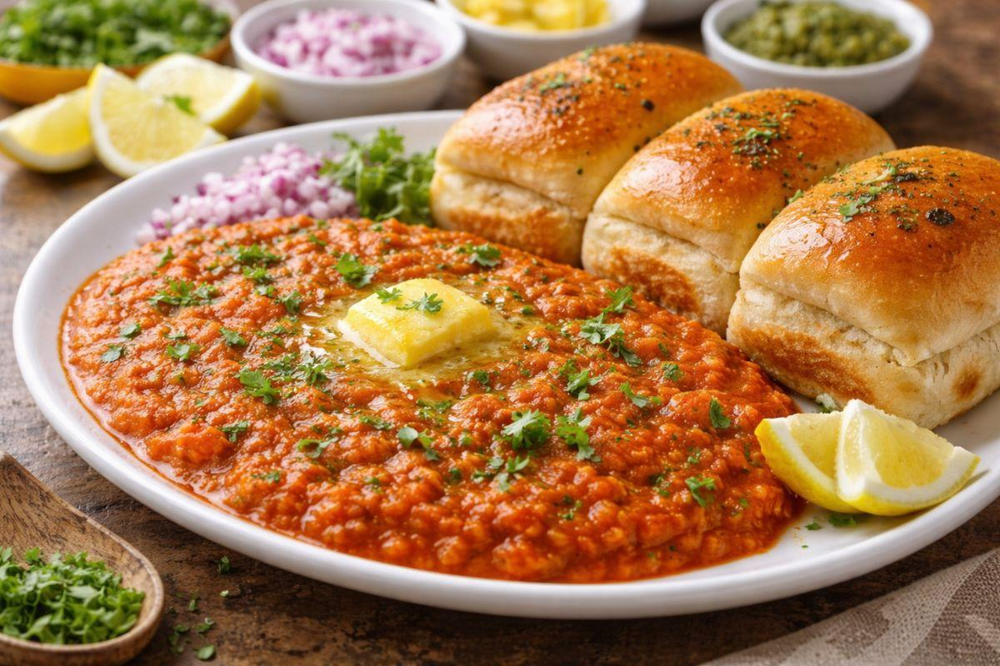

Ingredients
- Boiled potatoes (2), mixed veggies (1 cup – peas, carrot, capsicum), 1 onion, 2 tomatoes, 1–2 tbsp butter, pav bhaji masala, chili powder, salt, garlic (optional), pav bread.
Steps to Make
- Heat butter. Add chopped onion + garlic → sauté till soft.
- Add tomatoes → cook till mushy.
- Add veggies + mashed potatoes → mash everything in pan.
- Add pav bhaji masala (1–2 tsp), chili powder, salt.
- Add a little water → cook 5–7 mins while mashing.
- Finish with butter + coriander.
Home Page